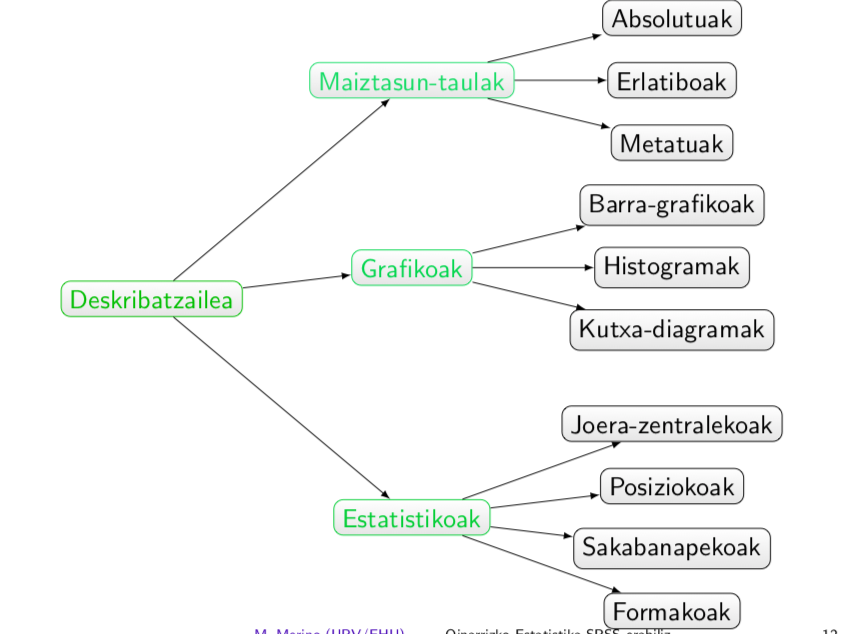
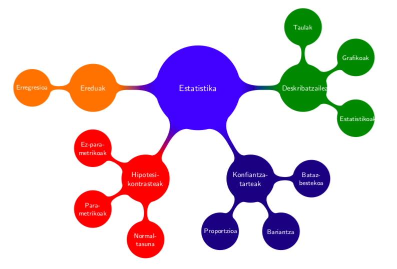
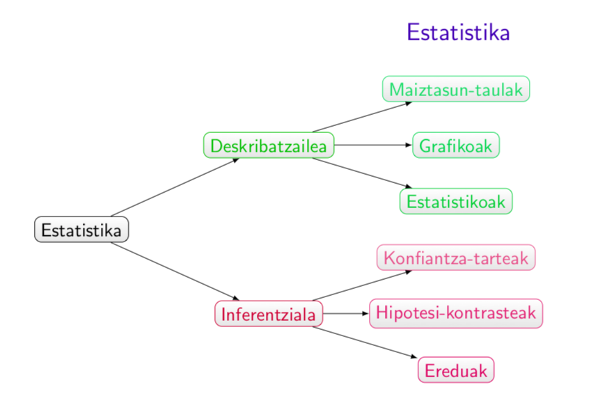
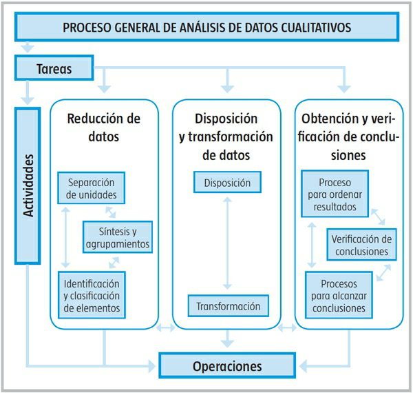

2.6.- Datuak Analizatzeko Tresnak
Ikerketan datuak analizatzeko zein TEKNIKAK, TRESNAK EDO ESTRATEGIAK erabiliko diren argituko da. Datuak analizatzeko programa informatikoak (SPSS, NVIVO, ATLAS TI, R…) erabiltzen badira aipatu behar da.
KUANTITATIBOAN:
- Deskribatzailea
- Inferentziala
KUALITATIBOAN
- Datu-matrizea: Datu-murrizketa, Datuen Disposizioa eta Eraldaketa, eta Emaitzen Lorpena eta Egiaztapena
Ikusizko laguntza


Estatistika Deskribatzalea
ESTATISTIKA DESKRIBATZAILEA: LAGIN BATEN INFORMAZIOA LABURBILTZEKO
VS
ESTATISTIKA INFERENTZIALAK: LAGIN BATEN INFORMAZIOA OROKORTZEKO
Irakurtzeko errazagoa
FITXATEGIA JAITSI, DESKONPRIMITU ETA karpeta barruan dagoen INDEX.HTML fitxtategia exekutatu.